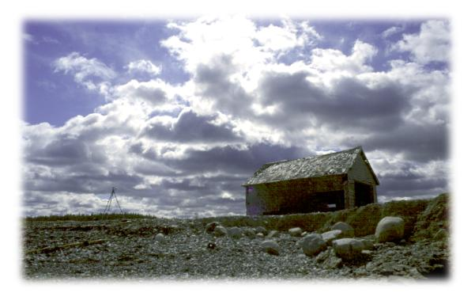
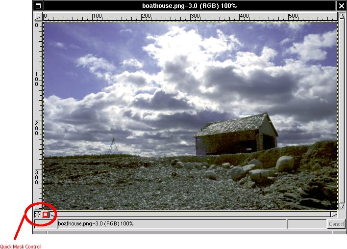
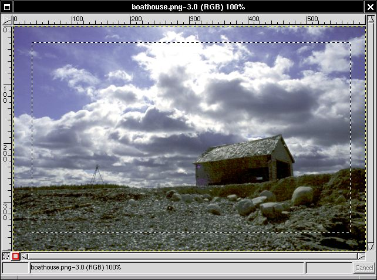
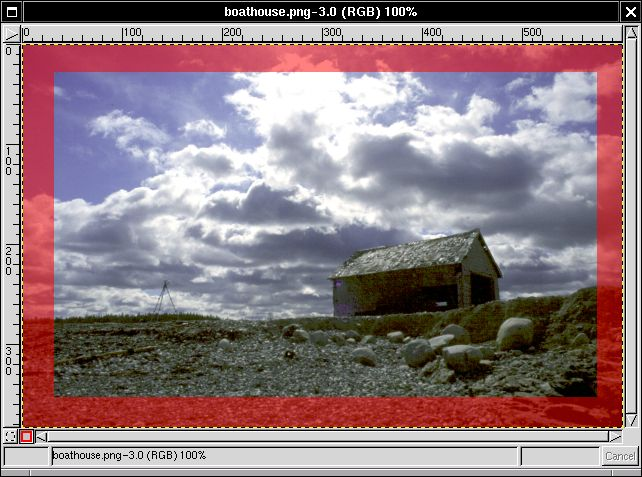
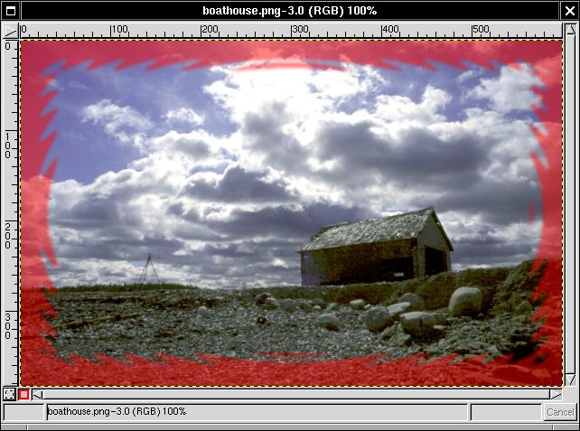
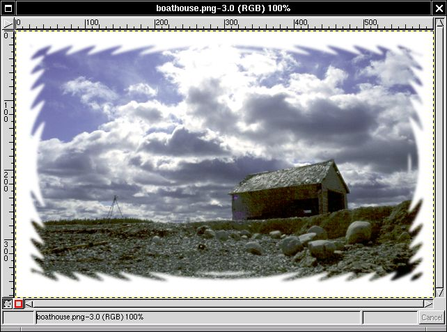
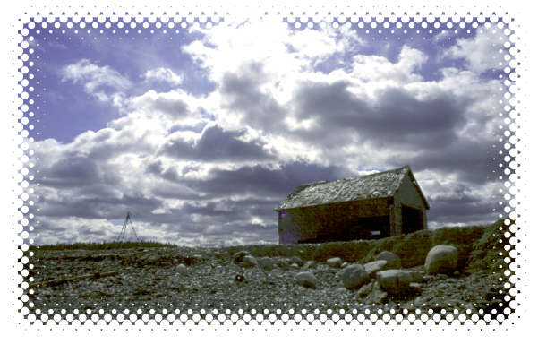

This tutorial shows how you can do vignette effects using a new feature of GIMP called QuickMask. QuickMask is a convenient way to modify selections using pixel-changing tools such as the paintbrush, eraser, or any plug-in filter. It lets you make very precise adjustments to your selections. This tutorial doesn't use QuickMask for complex masking; it's intended to show how you can use it to create quick and easy vignette effects.


For your first step, load up an image. Any image will do. GIMP 1.1.7, a development version of GIMP, introduced QuickMask. The QuickMask control buttons are located at the lower-left side of the image.

First, make a rectangular selection around the edge of the image. Then click on the red-bordered QuickMask icon in the lower-left corner of your image.

After you click the red QuickMask button, a translucent red mask appears around your selection. This red mask represents the outside of your selection. When you click the dashed QuickMask button to go back into normal selection mode, anything red will not be selected, and anything clear will be. So, let's start playing with this mask. First, right click on the image and select Filters > Distorts > Waves from the menu. Apply the filter, and watch what happens to the mask.
The mask gets all wavy. Let's add one more effect: Filters > Blur > Gaussian Blur (RLE).

Now that there is a soft edge on the mask, click the dashed QuickMask button to convert the mask back into a selection.
See how the selection follows the mask? This is a powerful feature of QuickMask. You can use it to modify any existing selection, and you can even use it to create new selections. Our last step is to use Select > Invert and Edit > Fill. The result, a soft white fade into the background, is shown in the final step.

And there you have it. Some more examples are listed below. Happy GIMPing!
The above image used Filters > Noise > Spread, with horizontal and vertical settings at 11, to get the effect.

I used some blurring and the Filters > Render > Newsprint plugin to get this effect.
As in the tutorial, this one used Waves, but instead of blurring, I used Filters > Blur > Pixelize instead.